Wallpaper samples: 3 themes × 5 motifs
Made by ../generate.py, our own code, with no outside images, so there are no licences involved. Every picture is 2560×1440, one per screen. The same seed gives the same picture every time. Click a picture to open it full size. Research prototype, 2026-10-10.
Purple (Kognog) dark theme
#6c4fc7 · #b9a3ff · #2a2442 · #cba6f7 · base #1e1e2e

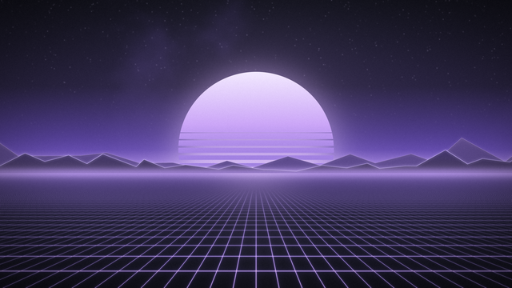
synthwaveSynthwave: a striped sun over a neon perspective grid, low-poly ridges with glowing edges.

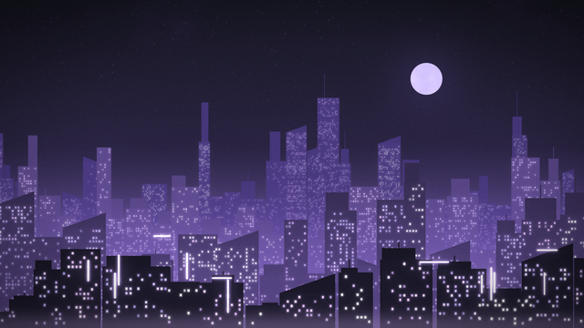
skylineCity skyline: four layers of towers fading into haze, lit windows, neon signs.

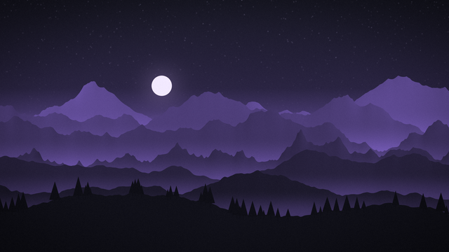
mountainsMountain ranges: seven ridges with mist in the valleys, a moon or sun, pine trees.

circuitCircuit board: routed copper traces, chips with pins, a blurred board behind for depth.

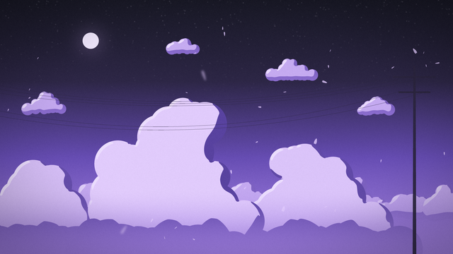
skycloudsCel-shaded cumulus towers in haze, small high clouds, a quiet power-line pole. A stand-in only: real anime art needs licensed work.
White / Light Gray light theme
#ffffff · #eff1f5 · #ccd0da · #8c8fa1 · ink #4c4f69

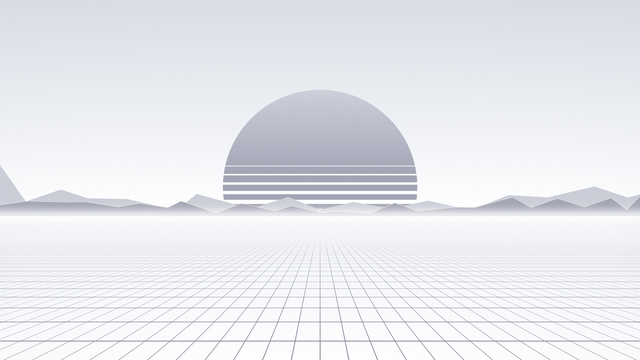
synthwaveSynthwave: a striped sun over a neon perspective grid, low-poly ridges with glowing edges.

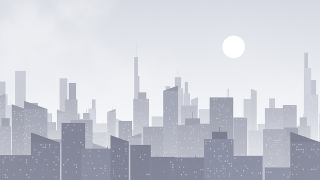
skylineCity skyline: four layers of towers fading into haze, lit windows, neon signs.

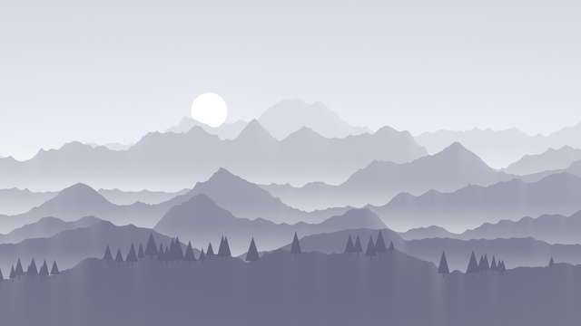
mountainsMountain ranges: seven ridges with mist in the valleys, a moon or sun, pine trees.

circuitCircuit board: routed copper traces, chips with pins, a blurred board behind for depth.

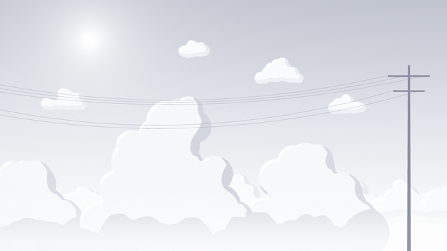
skycloudsCel-shaded cumulus towers in haze, small high clouds, a quiet power-line pole. A stand-in only: real anime art needs licensed work.
Dark Blue dark theme
#0a0f1e · #13203d · #1e4fae · #5b9cff · #89b4fa

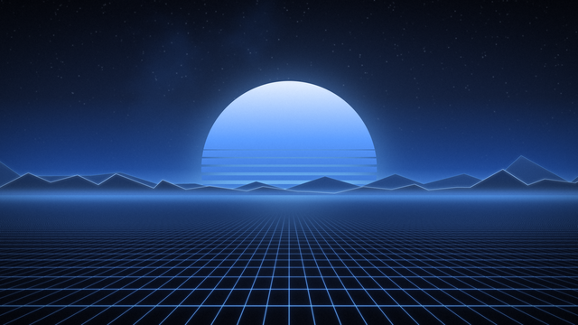
synthwaveSynthwave: a striped sun over a neon perspective grid, low-poly ridges with glowing edges.

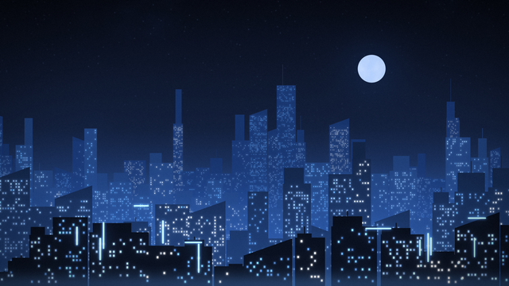
skylineCity skyline: four layers of towers fading into haze, lit windows, neon signs.

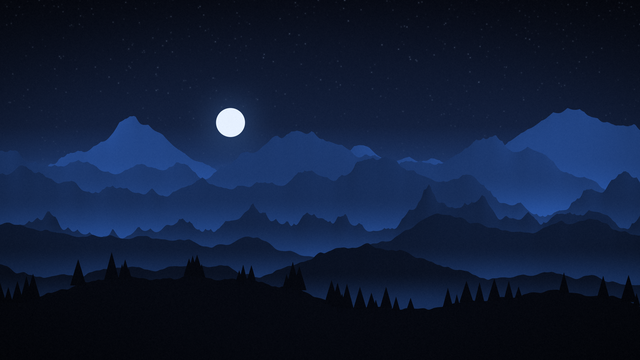
mountainsMountain ranges: seven ridges with mist in the valleys, a moon or sun, pine trees.

circuitCircuit board: routed copper traces, chips with pins, a blurred board behind for depth.

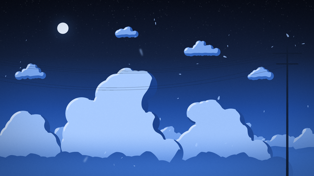
skycloudsCel-shaded cumulus towers in haze, small high clouds, a quiet power-line pole. A stand-in only: real anime art needs licensed work.